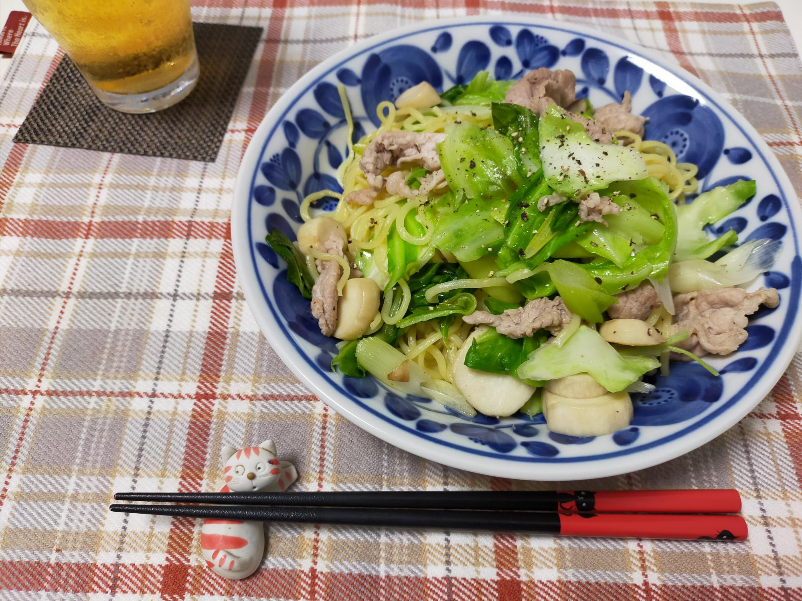

焼きそば3食分を同時に美味しく作る方法
材料・金額
| 材料 | 購入金額 | 使用量 | 金額 | kcal |
|---|---|---|---|---|
| 焼きそば3食入 | 170 | 3食 | 170 | 756 |
| 豚小間220g | 258 | 220g | 258 | 579 |
| キャベツ1玉1,700g | 205 | 160g | 19 | 39 |
| ねぎ3本 | 214 | 1/2本 | 36 | 9 |
| エリンギ2pac | 205 | 1pac | 103 | 23 |
| ごま油 | - | 小1 | - | 37 |
| 水 | - | 50cc | - | - |
| 合計 | - | - | 586 | 1,443 |
| 1食分（合計×0.33） | - | - | 193 | 476 |
作り方
- キャベツは一口大にちぎる
- ネギは7mm程度の厚さの斜め切り、エリンギも7mm程度の厚さに切る
- フライパンにごま油を熱し、1.と2.の野菜を中火で炒める
- 3.に火がとおったら、ザルにあげておく
- 焼きそば麺3食分は内袋のまま、600Wのレンジで60秒温めておく
- 別のフライパンに豚肉をちぎりながら入れ、炒める
- 野菜を炒めていたフライパンをふいて綺麗にし、中火にかけ、焼きそば麺と水50cc入れフタをして、蒸し焼きにする、時々麺をはしでほぐす
- 豚肉に火がとおったら、7.のフライパンに入れて（豚肉からでる水分は入らないように）、ザルにあげてあった野菜も戻し入れ、付属のソースで味をつけてできあがり
振り返り
焼きそばに入れる水は麺がほぐせるギリギリくらいの量でいいかと思います。焼きそばは簡単にできるのがいいところなのに、フライパン2枚出すなんて…と葛藤はありますが、野菜は別炒めにした方がシャキッといただけます。
ちなみに、今夜のごはんがおでんなので、麺をほぐす水はおでんのつゆにして、付属のソース（期間限定ガーリック塩味）は3食分のうち2食分だけ使いました。残った1食分のソースは、チャーハンの味付けにでも使おうと思っています。
焼きそば2食分は本日のランチにいただいて、残りの1食分は3等分してお弁当に詰めました。